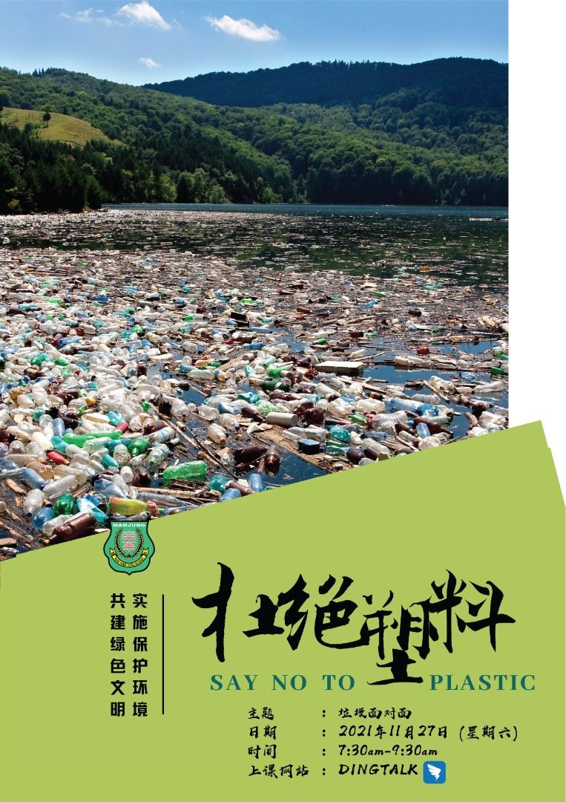

绿色生态与环保健康的生活环境，对每个民众都很重要，因此唯有做好垃圾分类，才有可能
绿色生态与环保健康的生活环境，对每个民众都很重要，因此唯有做好垃圾分类，才有可能初步落实美好的生活素质。欲要了解相关的垃圾分类知识，请准时出席11月27日（星期六）早上七点半的“环境教育课程”，我们不见不散。

绿色生态与环保健康的生活环境，对每个民众都很重要，因此唯有做好垃圾分类，才有可能初步落实美好的生活素质。欲要了解相关的垃圾分类知识，请准时出席11月27日（星期六）早上七点半的“环境教育课程”，我们不见不散。
